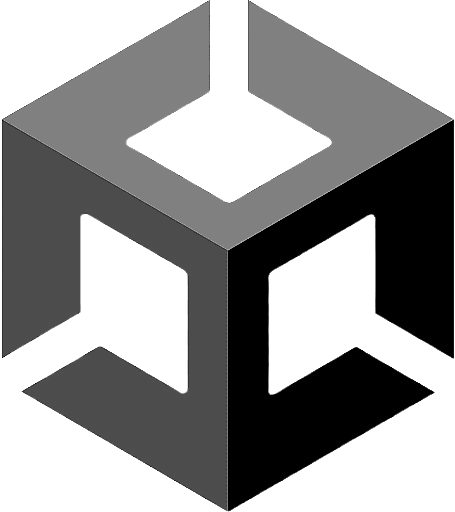
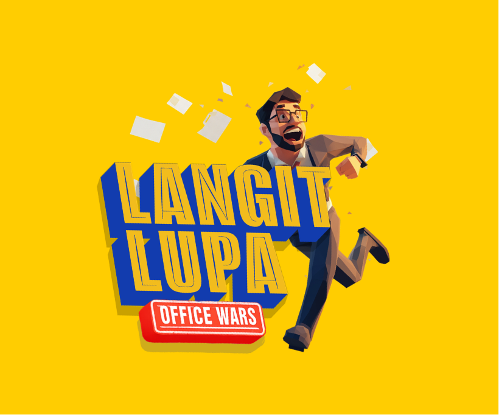
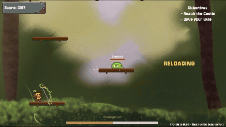
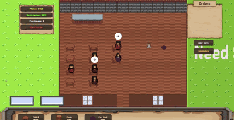
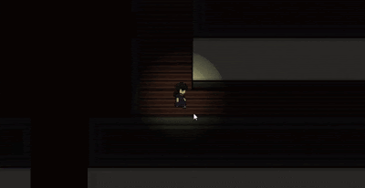
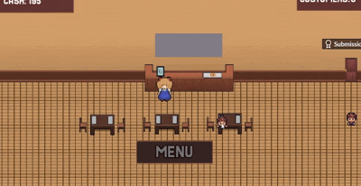
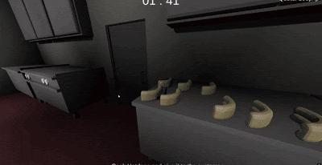
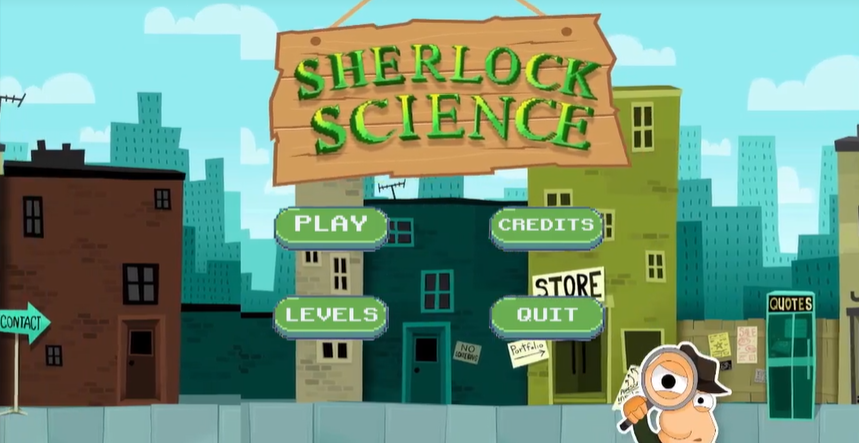
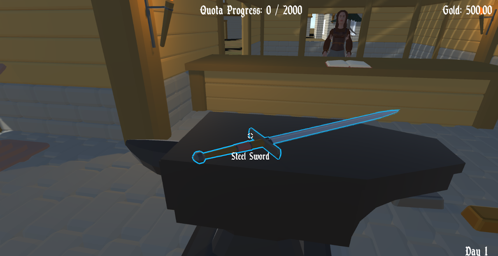

- C# Unity Programmer - Intern (NinetySix Studios), 3 months
- Collaborated with the development team to build and refine core gameplay mechanics, writing clean, well-documented C# code.
- Engineered scalable and maintainable game architecture using C# Observer Pattern, Interfaces, Service Locators, Factory design pattern and etc. to streamline object creation.
- Designed modular, data-driven systems utilizing Scriptable Object Architecture Pattern (SOAP) to allow easy balancing and tweaking by designers.
- Utilized C# Reflection to dynamically inspect and manipulate object properties at runtime, creating more flexible and robust game systems.
- C# Unity Programmer - Solo (Capstone Project), M2VEX FMV Virtual School Tour
- M2VEX is a virtual campus exploration game designed to provide immersive and informative walkthrough of Mapúa Malayan Colleges Mindanao
- Godot Developer - Solo (Micro Jam 037: Food), Plate Pals
- M2VEX is a virtual campus exploration game designed to provide immersive and informative walkthrough of Mapúa Malayan Colleges Mindanao



Hey, I'm Eugene. As a Game Developer/Programmer, I turn creative design into reality through clean, scalable code. Whether I'm building core gameplay mechanics, wiring up UI, or tackling multiplayer basics, I focus on building systems that work. My background as a player allows me to anticipate user needs, while my dedication to playtesting, debugging, and edge-case analysis ensures the mechanics I develop are polished, optimized, and reliable.
- C# Unity Developer
- GDScript Godot Developer
- Web Development
- QA Game Tester
- UI/UX Design
- Level Design
- Video Editor
- Story Writer
-

Langit Lupa (NinetySix Studio), Unity C# ProgrammerLangit lupa is a party game in steam that was publish and made by NinetySix Studio, During my internship at NinetySix Studio, I played a key role in the development of the Steam-published party game, Langit Lupa. This experience allowed me to deepen my mastery of C# and Unity within a professional pipeline. Working closely with the development team, I focused on building robust gameplay systems and refining user mechanics, prioritizing clean code practices and comprehensive documentation to support the project's long-term scalability.
-

Fruited to Return, Unity C# ProgrammerFruited to return is a 2D precision platformer with a Roguelite feature. A journey of a mango that is brought to an unknown world to save his avocado wife. This game was a submission to a game jam called thatgamejam #01, which gave me a lot of insight in the game and how to improve it.
-
 M2VEX (FMV School Tour), Unity C# Programmer
M2VEX (FMV School Tour), Unity C# ProgrammerM2VEX is a virtual campus exploration game designed to provide immersive and informative walkthrough of Mapúa Malayan Colleges Mindanao (MMCM). Set within a full-motion video (FMV) interface, the game enables users to navigate the campus environment while being guided by a virtual avatar who offers context, directions, and key insights along the way.
-

Cat Connect, Unity C# ProgrammerA 32x32 2D pixel cozy game which main goal of Cat Connect is to maintain and grow your cafe's satisfaction level. The player must prevent the cafe’s satisfaction from dropping to zero once it does, the game ends. To keep the cafe thriving, players must carefully manage resources, upgrade equipment, and build new furniture to improve both customer experience and the cafe’s efficiency. .
-

Michelle, GDScript Godot ProgrammerA 32x32 2D pixel horror that represents the story of Michelle, A kind hearted child who one day suddenly became ill. An illness that made her paranoid schizophrenic. This horror game that was awarded as one of the top 10 in the Scream Secrets 2024 game jam.
-

Plate Pals, GDScript Godot ProgrammerA 32x32 2D pixel art game inspired by the old Diner Dash games. Its a order and delivery game that the player needs to reach a certain quota. This is a game jam entry for the Micro-Jam: Food 2025 which is placed 26th.
-

Frigg's Grill n Thrill, Unity C# ProgrammerWelcome New Employee! You are given the chance to change your life if you work hard on Frigg's Grill N Thrill. Please follow protocols and respect the rules.... or else. This game is submitted in the Scream Jam 2024 game jam which was placed top 30.
-

Sherlock Science, Unity C# ProgrammerA 2D game for kids, It is an educational point and click game where the player finds a certain item that is needed for the objective. After finding the objective, a definition of the item will be shown and explains its uses.
-

Blacksmith, Unity C# ProgrammerA simulation game where you manage a blacksmith shop. Smelt ores, craft different arrays of weapons, satisfy your customers, and earn money to buy more resources and upgrades.